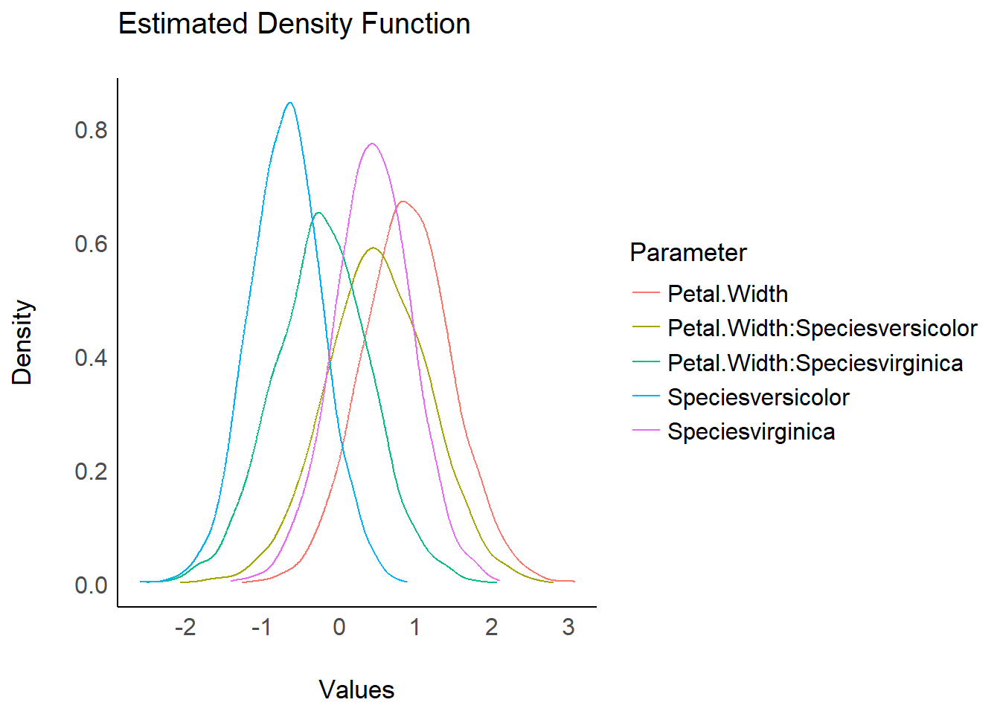
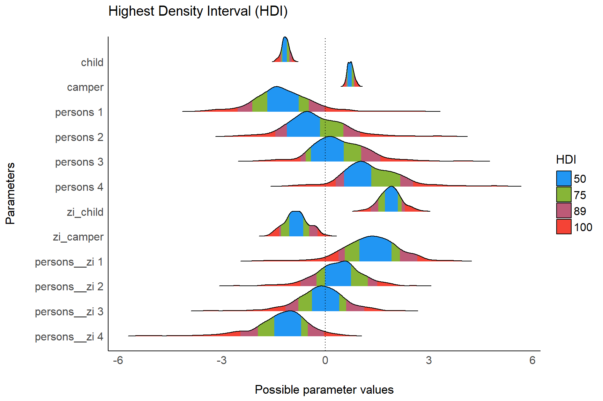

Plotting Functions for the bayestestR Package
bayestestR.RmdDensity Estimation
set.seed(123)
model <- rstanarm::stan_glm(Sepal.Length ~ Petal.Width * Species, data = iris)
result <- estimate_density(model)
plot(result)


Test for Practical Equivalence
model <- rstanarm::stan_glm(
mpg ~ wt + gear + cyl + disp, data = mtcars
)
result <- equivalence_test(model)
plot(result) +
theme_blackboard() +
scale_fill_material()
result <- equivalence_test(model, ci = c(.89, .95))
plot(result) +
theme_abyss() +
scale_fill_flat()
Bayes Factors (BFs)
Bayes Factors for Parameters
result <- bayesfactor_parameters(model)
plot(result) +
scale_color_material() +
scale_fill_material()
Bayes Factors for Model Comparison
lm0 <- lm(qsec ~ 1, data = mtcars)
lm1 <- lm(qsec ~ drat, data = mtcars)
lm2 <- lm(qsec ~ wt, data = mtcars)
lm3 <- lm(qsec ~ drat + wt, data = mtcars)
result <- bayesfactor_models(lm1, lm2, lm3, denominator = lm0)
plot(result, n_pies = "one", value = "probability") +
scale_fill_pizza(reverse = TRUE) 
